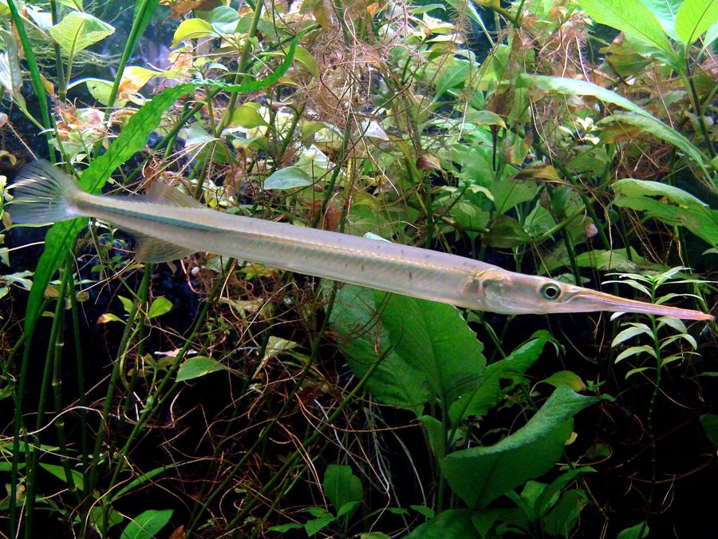

सुइयाFreshwater Garfish
Xenentodon cancila · Belonidae · FSH-0013

- Scientific name
- Xenentodon cancila (Hamilton, 1822)
- Family
- Belonidae
- Hindi
- सुइया
- Status here
- native
- IUCN
- LC
When to look कब देखें
Present all year.
सुइया / Freshwater Garfish
Xenentodon cancila (Hamilton, 1822) — Belonidae
सुइया (फ्रेशवाटर गारफिश) — पूर्वी उत्तर प्रदेश के तालाबों, धीमी बहने वाली नदियों और सिंचाई नहरों में पाई जाने वाली एक अत्यंत विशिष्ट, सुई के आकार की मीठे पानी की निवासी मछली है। इसे "मीठे पानी की नीडलफिश" भी कहा जाता है। इसका शरीर अत्यधिक लंबा, पतला और बेलनाकार होता है, जिसका रंग ऊपर से हरा-भूरा और नीचे से चांदी जैसा सफेद होता है। इसकी सबसे बड़ी विशेषता इसके दोनों जबड़े (jaws) हैं, जो लंबे होकर एक चोंच या सुई जैसी संरचना (needle-like beak) बनाते हैं, जिसमें कई बारीक और नुकीले दांत होते हैं। यह मछली पानी की बिल्कुल ऊपरी सतह (surface) पर तैरती है और सतह पर तैरने वाले छोटे कीड़ों और छोटी मछलियों पर अचानक बग़ल से हमला (sideways strike) करके उन्हें पकड़ती है।
Quick Identification त्वरित पहचान
| Feature | Description |
|---|---|
| Size | Small to medium elongated fish (typically 20–31 cm total length); weight 15–60 g |
| Body shape | Highly elongated, sub-cylindrical, and needle-like body |
| Beak | Long, beak-like jaws (beak) armed with numerous sharp, needle-like teeth |
| Colouration | Greenish-grey dorsally; silvery lateral band; pure white belly |
| Fins | Dorsal and anal fins set very far back near the caudal fin; tail is rounded |
Field tip: Look near the surface of clear, weedy pond margins. Easily spotted as a thin, pencil-like stick floating motionless just below the water surface, which darts away at lightning speed if approached.
Morphology आकारिकी
Biometrics (typical measurements for adult specimens in Gangetic river basins):
| Measurement | Range |
|---|---|
| Standard length (SL) | 180–280 mm |
| Total length (TL) | 200–310 mm |
| Weight | 15–60 g |
Body structure: The body is extremely elongated, laterally compressed, and slender. Both the upper and lower jaws are extended into a long, needle-like beak. The teeth are fine, sharp, and present along the entire length of the jaws. The scales are extremely small, cycloid, and cover the entire body. The dorsal fin (with 15–18 rays) and the anal fin (with 16–19 rays) are situated far back on the body, directly opposite each other, allowing for rapid forward bursts. The caudal fin is rounded or slightly truncate.
Color details: The dorsum is greenish-grey to olive-green, with a dark longitudinal stripe running along the back. A brilliant, silvery-grey band runs along the sides of the body from the pectoral fin to the tail. The lower half of the body and the belly are silvery-white. The fins are translucent, sometimes showing a greenish tint.
Behaviour & Ecology व्यवहार और पारिस्थितिकी
Surface hunter and rapid darter.
- Surface swimming: Adapted exclusively for living in the topmost few centimeters of the water column (neustonic zone), where its green-and-silver color pattern blends perfectly with floating weeds and surface reflections.
- Sideways strike: Hunts by drifting slowly toward prey. When within range, it snaps its head sideways with a rapid movement to snare the prey in its beak teeth.
- Leaping behavior: Capable of leaping out of the water surface for short distances when startled by predators or when chasing flying insects.
Ecological Role पारिस्थितिक भूमिका
Surface carnivore.
- Trophic role: Serves as a specialized secondary consumer, regulating the population of surface-dwelling insects and the fry of other fish species.
- Predator and prey: Provides a food source for large diving waterbirds like kingfishers and cormorants, which can easily grab the thin fish from the surface.
Life Cycle / Phenology जीवन चक्र
- Breeding season: May to August, peaking in the early monsoon weeks.
- Breeding grounds: Spawns in clear, weedy water bodies.
- Nesting and eggs: The female lays small eggs (up to 2,000) that have long, sticky filamentous threads.
- Egg attachment: The thread-like filaments entangle with submerged vegetation, especially the roots of floating weeds, preventing the eggs from sinking to the muddy bottom where oxygen is low.
- Incubation: Eggs hatch in 7–10 days. The hatchlings have short jaws; the characteristic needle-beak develops gradually as they grow.
Host Plants or Prey आहार
Primary food items:
- Insects: Surface bugs (such as [INS-0031 Indian Water Strider], if present), mosquito larvae, and adult flies falling on the water.
- Fish: Fry and small juveniles of barbs, perchlets (such as [FSH-0012 Elongate Glassy Perchlet]), and carps.
Predators / Natural Enemies शत्रु
- Birds: Kingfishers (like [BRD-0031 White-throated Kingfisher]), egrets (such as [BRD-0030 Little Egret]), and cormorants.
- Predatory Fish: Larger snakeheads (like [FSH-0009 Great Snakehead]) attack them from below.
- Reptiles: Water snakes (Xenochrophis) hunt them in shallow weedy pools.
Agricultural / Human Relevance कृषि प्रासंगिकता
Trash fish and mosquito controller.
- Malaria regulation: Like the Glassy Perchlet [FSH-0012 Elongate Glassy Perchlet], it is a valuable helper in agricultural areas. By eating mosquito larvae and water bugs directly from the surface of paddy fields, it helps control disease vectors.
- Market status: Often caught by local fishermen using hand nets (pala) in Basti's village ponds. Because of its bony nature and thin body, it is sold cheap in rural markets. It is eaten fried or cooked in spicy curry.
- Aquarium hobby: Exported internationally as a freshwater needlefish for specialized home aquariums, valued for its unique hunting behavior.
Expected Locally स्थानीय रूप से अपेक्षित
Not a field record. Written from published accounts for eastern Uttar Pradesh. No confirmed local sighting yet — if you have seen it, that is what the atlas needs.
अभी तक स्थानीय पुष्टि नहीं। यह विवरण प्रकाशित स्रोतों से है, किसी अवलोकन से नहीं।
Very common in Basti block villages, particularly in the sluggish canals connected to the Kuwano river. On clear sunny afternoons, they can be seen in large numbers floating silently in the shadow of overhanging grass along pond edges. Village children often catch them by using thin sewing threads with small earthworms as bait.
Distribution वितरण
Global range: Widespread in India, Pakistan, Bangladesh, Nepal, Sri Lanka, Myanmar, and Thailand.
In India: Found throughout the freshwater systems of the plains and foothills.
In Uttar Pradesh: Abundant in all river systems, canals, floodplains, and perennial village water bodies.
In Basti district / eastern UP: Found in canals, rivers (Ghaghra, Kuwano), and weedy tanks in all blocks.
Research Questions शोध प्रश्न
Anyone can investigate these | कोई भी इन प्रश्नों की जाँच कर सकता है
- What is the strike success rate of Suiya when attacking water striders vs. underwater mosquito larvae? — Record and analyze hunting clips in aquariums.
- How does the presence of filamentous algae affect the egg attachment success of this species in Basti ponds? — Survey weed mats during the breeding season.
- What is the growth rate of the beak structure in Suiya fry from hatching to 60 days of age? — Measure and photograph growing fry in nursery tanks.
- How do Suiya adjust their surface-floating position to avoid detection by diving kingfishers on sunny days? / धूप के दिनों में गोता लगाने वाले किंगफिशर से बचने के लिए सुइया अपनी सतह पर तैरने की स्थिति को कैसे अनुकूलित करती है? — Record flight and dive responses under different light levels.
- Does the introduction of herbicide runoff from agricultural fields affect the hatching success of attached garfish eggs? / कृषि क्षेत्रों से नदी में बहने वाले शाकनाशियों (herbicides) का सुइया के चिपके हुए अंडों के फूटने की दर पर क्या प्रभाव पड़ता है? — Test water quality and hatching rates in runoff zones.
Similar Species मिलती-जुलती प्रजातियाँ
| Species | Key Difference | हिंदी |
|---|---|---|
| Hyporhamphus limbatus (Congaturi Halfbeak) | Only the lower jaw is elongated; upper jaw is short and triangular; body is more silvery | सुइया (हाफबीक) — केवल निचला जबड़ा लंबा |
| Mastacembelus armatus (Zig-zag Spiny Eel) | Fleshy snout with a small proboscis (no beak); dorsal spines present; bottom-dweller, eel-like body | बाम / बामी — सांप जैसा शरीर, तलहटी में रहना |
| [FSH-0009 Great Snakehead] (Channa marulius) | Large, cylindrical body; snake-like head with no beak; rounded tail with orange eye-spot | सौर — बड़ा, बिना चोंच का सिर, भारी शरीर |
Field rule: Needle-like elongated body, both upper and lower jaws extended into a long tooth-armed beak, and habit of floating motionless just below the water surface identify the Freshwater Garfish.
Taxonomy & Classification वर्गीकरण
Original description. Francis Hamilton described the Freshwater Garfish as Esox cancila in 1822 in his work An Account of the Fishes found in the river Ganges and its branches (pp. 213, 380). The type locality was the ponds and rivers of Bengal. The genus name Xenentodon combines the Greek xenos (strange/unusual) and odon (teeth). The specific name cancila is a Latinized version of the local Bengali name for the fish.
Subspecies. Monotypic — no subspecies are currently recognised in the Indian freshwater populations.
Family and order placement. Placed in the order Beloniformes, family Belonidae (representing one of the few freshwater genera of the predominantly marine needlefish family).
Phylogenetic notes. Xenentodon cancila represents a secondary invasion of freshwaters by a marine ancestor, showing highly specialized cranial modifications for beak-feeding.
IUCN status rationale. Listed as Least Concern (LC) due to its high abundance, extensive geographic distribution across South Asia, and lack of significant threat of extinction.
Photo Gallery फोटो गैलरी
References संदर्भ
- Hamilton, F. (1822). An Account of the Fishes found in the river Ganges and its branches. Archibald Constable & Co., Edinburgh, pp. 213, 380. [original description]
- Talwar, P. K. & Jhingran, A. G. (1991). Inland Fishes of India and Adjacent Countries. Vol. 2. Oxford & IBH Publishing Co., New Delhi.
- Jayaram, K. C. (2010). The Freshwater Fishes of the Indian Region. 2nd ed. Narendra Publishing House, Delhi.
- Lovejoy, N. R. et al. (2004). Ancient transatlantic migration of freshwater needlefishes (Belonidae: Potamorrhaphis). Marine Biology, 144(1), 39-48.
- IUCN SSC Freshwater Fish Specialist Group (2024). Xenentodon cancila. IUCN Red List of Threatened Species. Ver. 2024.
- GBIF Occurrence Data — Xenentodon cancila, Uttar Pradesh (2010–2025).
Source file: species/fauna/fish/freshwater_garfish.md